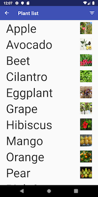
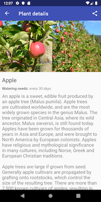
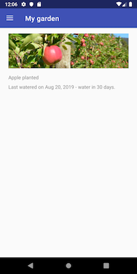
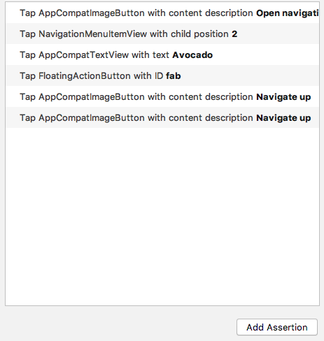
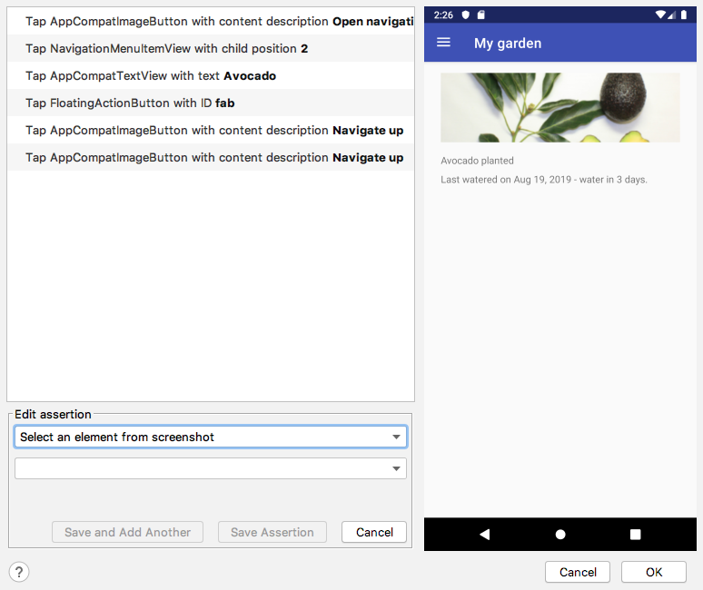
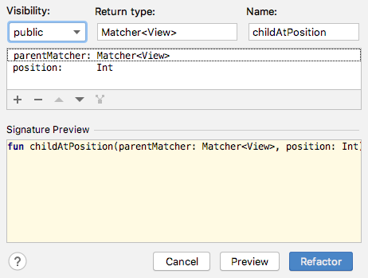
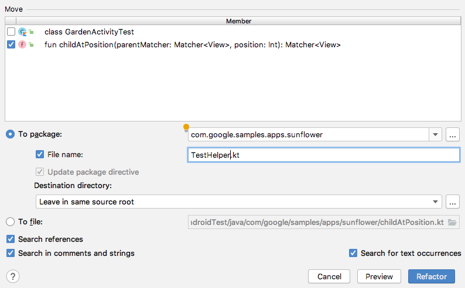
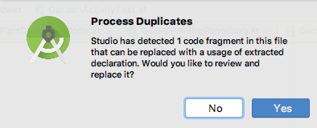
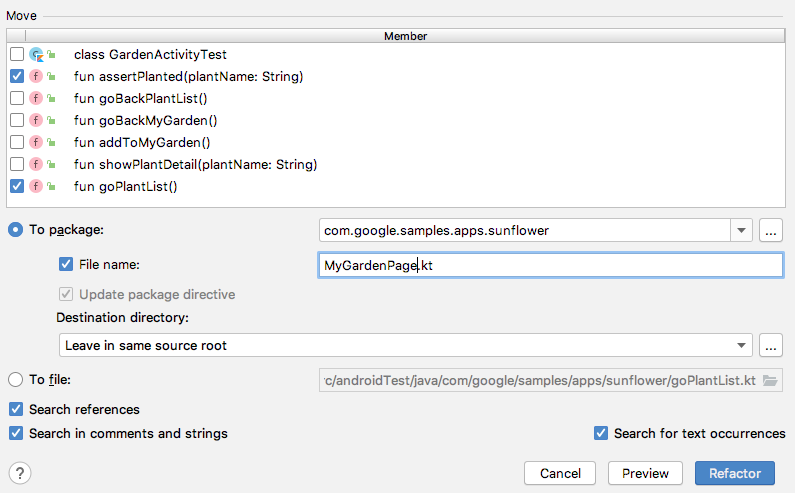

<!doctype html>

<html>
<head>
  <meta name="viewport" content="width=device-width, minimum-scale=1.0, initial-scale=1.0, user-scalable=yes">
  <meta name="theme-color" content="#4F7DC9">
  <meta charset="UTF-8">
  <title>Espressoの知識ゼロでも書ける！Android UIテストはじめの一歩</title>
  <link rel="stylesheet" href="//fonts.googleapis.com/css?family=Source+Code+Pro:400|Roboto:400,300,400italic,500,700|Roboto+Mono">
  <link rel="stylesheet" href="//fonts.googleapis.com/icon?family=Material+Icons">
  <link rel="stylesheet" href="https://storage.googleapis.com/claat-public/codelab-elements.css">
  <link rel="stylesheet" href="../assets/style.css">
  <style>
      tbody tr:nth-child(1) {
        background: #eee
      }
      tbody td {
        border: 1px solid #ccc
      }
    .success {
      color: #1e8e3e;
    }
    .error {
      color: red;
    }
  </style>
</head>
<body>
  <google-codelab-analytics gaid="UA-101877661-28"></google-codelab-analytics>
  <google-codelab codelab-gaid=""
                  id="android-ui-tests-basic"
                  title="Espressoの知識ゼロでも書ける！Android UIテストはじめの一歩"
                  environment="web"
                  feedback-link="https://dena.github.io/codelabs/">
    
      <google-codelab-step label="概要" duration="1">
        <p>このCodelabは、前半のスライドパートと後半のCodleabパートの二部構成になっています。</p>
<p>前半のスライドパートはこのCodelabからリンクしています。スライドパートで学べる内容は次の通りです。</p>
<ul>
<li>UIテストの自動化を始める前に検討すべきこと</li>
<li>長くテストコードを利用し続けるために必要なこと</li>
</ul>
<p>後半のCodelabパートで学べる内容は次の通りです。</p>
<ul>
<li>Espresso Test RecorderとAndroid Studioの機能を駆使して、Espresso APIの知識なしにメンテナンス性の高いテストを書く方法</li>
</ul>
<aside class="warning"><p>このCodelabでは、Espressoが提供するAPIの概要は取り上げません。</p>
</aside>
<h2 is-upgraded>事前知識として必要なもの</h2>
<ul>
<li><a href="https://kotlinlang.org/" target="_blank">Kotlin</a>の基本的な理解</li>
<li><a href="https://junit.org/junit4/" target="_blank">JUnit4</a>の基本的な理解</li>
<li><a href="https://developer.android.com/studio/index.html?hl=ja" target="_blank">Android Studio</a>の基本的な操作方法への理解。ビルド、instrumented testの実行方法など。</li>
</ul>
<h2 is-upgraded>ショートカット表記について</h2>
<p>Android Studioのショートカットキーを押して何らかのアクションを実行してほしい場合は、</p>
<p>「<code>Change Signature (Command + F6)</code>を実行します」</p>
<p>のように、アクション名の後に括弧書きでMacのショートカットキーを表記しています。</p>
<p>Mac以外の環境で、ショートカットキーが分からない場合は、Android Studioのメニュー <code>Help &gt; Find Action</code> にAction名を入力してください。お使いの環境におけるショートカットが表示されます。<br>また、次節で紹介するスライドパートの最終ページにWindows版のショートカット一覧をまとめています。あわせて参考にしてください。</p>


      </google-codelab-step>
    
      <google-codelab-step label="事前準備" duration="10">
        <h2 is-upgraded>推奨環境</h2>
<ul>
<li><a href="https://kotlinlang.org/" target="_blank">Kotlin</a>1.3.31</li>
<li><a href="https://developer.android.com/studio/index.html?hl=ja" target="_blank">Android Studio</a>バージョン3.5.2</li>
<li>Android 4.4以上（APIレベル19）以降を搭載したデバイスまたはエミュレータ</li>
</ul>
<h2 is-upgraded>予め実施しておいていただきたいこと</h2>
<aside class="warning"><p><strong>以下の手順で、エミュレータや依存ライブラリを事前にダウンロードしておいてください。<br>ダウンロードせずに当日を迎えると、その場で数百MBのダウンロードが始まり、時間がなくなってしまいます。</strong><br>ご協力よろしくお願いします。</p>
</aside>
<ul>
<li>Android Studio 3.4以上を用意します<br>(講師は3.5.2を利用します)</li>
<li>実機を利用しない場合は、Androidエミュレータ(講師はAPI 28を利用しますが、21以上ならOKです)をダウンロードします</li>
<li>このCodelabで利用するエミュレータを起動し、以下の項目を設定します<br>(実機を利用する場合も同じように設定をしてください。機種によってメニュー構成が異なります)<br><br><ul>
<li><code>Settings &gt; System &gt; Language &amp; input &gt; Language</code>を<code>English (United States)</code>にする</li>
<li>Developer Optionsメニューを表示したことが無い場合は、<br><code>Setting &gt; System &gt; About emulator device &gt; Build number</code>を何回もタップし、Developer Optionsメニューを表示させる</li>
<li><code>Settings &gt; System &gt; Advanced &gt; Developer Options</code>を表示し、以下の設定を全てOFFにする<br><ul>
<li>Window animation scale</li>
<li>Transition animation scale</li>
<li>Animator duration scale</li>
</ul>
</li>
</ul>
</li>
<li>次のGitリポジトリをcloneします<pre><code>$ git clone git@github.com:DeNA/codelabs.git
</code></pre>
</li>
<li><code>codelabs/sources/android-ui-tests-basic</code>ディレクトリに題材アプリがありますので、それをAndroid Studioで開きます</li>
<li>題材アプリをビルドし、エミュレータ・実機にインストール・起動できることを確認します</li>
</ul>
<h2 is-upgraded>題材アプリの概要</h2>
<p>GoogleがAndroid Jetpackのサンプルアプリとして公開している<a href="https://github.com/googlesamples/android-sunflower" target="_blank">Android Sunflower</a>の2019年5月18日時点のソースコードをベースに、少し改修を加えたものを題材として使用します。改修内容としては、JavaからKotlinへの書き換えなどを行いました。</p>
<p>題材アプリの主要な機能は以下のとおりです。</p>
<ul>
<li>Plant List(植物の一覧)を表示する</li>
<li>Plant Detail(植物の詳細)を表示する</li>
<li>植物を「My garden(自分の庭)」に登録する</li>
</ul>
<p class="image-container"></p>


      </google-codelab-step>
    
      <google-codelab-step label="スライドパート" duration="15">
        <p>スライドパートでは、次の内容を解説しています。</p>
<ol type="1">
<li>UIテストの自動化を始める前に</li>
<li>テストツール選択のポイント</li>
<li>長くテストコードを利用し続けるには</li>
</ol>
<p><script async class="speakerdeck-embed" data-id="abe2874062a74e36bfc30c0f41abc156" data-ratio="1.33333333333333" src="//speakerdeck.com/assets/embed.js"></script></p>
<aside class="special"><p>埋め込まれているスライドが表示されない場合は、<a href="https://speakerdeck.com/sumio/the-first-step-of-android-ui-testing" target="_blank">こちらのリンク</a>から参照してください。</p>
</aside>
<p>全て目を通していただくことが望ましいですが、時間が無い場合は次の箇所だけでも目を通してみてください。<br>以降の理解がスムーズになります。</p>
<ul>
<li>「UIテストの自動化を始める前に」＞「UIテストの特徴」</li>
<li>「長くテストコードを利用し続けるには」＞「Page Objectデザインパターンを適用する」</li>
</ul>


      </google-codelab-step>
    
      <google-codelab-step label="Espresso Test Recorderでテストシナリオを記録する" duration="11">
        <p>Android Studioには、Espresso のテスト記録ツール Espresso Test Recorderが備わっています。<br>Test Recorder を使えば、テスト対象アプリの操作を記録し、Espressoのテストコードとして保存してくれますので、Espressoの知識なしにテストケースを作れます。</p>
<h2 is-upgraded>Espresso Test Recorderの起動</h2>
<p>Recorder でテストの記録を開始するために次のものを用意します。</p>
<ul>
<li>テスト対象プロジェクトを開いた状態のAndroid Studio</li>
<li>記録したいテスト対象アプリが動作するAndroid 端末</li>
</ul>
<p>ここでは、題材アプリをAndroid Studioで開き、エミュレータ・Android端末が認識されている状態にしてください。</p>
<p>その状態でメニューから<code>Run &gt; Record Espresso Test</code>を選ぶと、記録が始まります。<br>Android端末上でテスト対象アプリが立ち上がり、<code>Record Your Test</code>と書かれたダイアログが表示されれば記録が始まっています。</p>
<h2 is-upgraded>操作の記録</h2>
<p>次の手順で操作をしてみましょう。ひとつ操作するたびに<code>Record Your Test</code>ダイアログに操作した内容が記録されます。記録時の応答速度は遅いため、ダイアログに操作内容が反映されるまで待ってから、次の操作を行うようにしてください。</p>
<ol type="1">
<li>左上のハンバーガーボタン(≡の形をしたメニューボタン)をタップする</li>
<li>ナビゲーションドロワーが開くのを待って<code>Plant list</code>をタップする</li>
<li>Plant list画面に表示されている植物一覧の中から、<code>Avocado</code>をタップする</li>
<li>Plant Detail画面の右下にあるfavボタン(＋ボタン)をタップする</li>
<li>Plant Detail画面左上の戻るボタン(←ボタン)をタップする</li>
<li>Plant list画面左上の戻るボタン(←ボタン)をタップする</li>
</ol>
<p>操作が終わると、Android端末ではMy Garden画面に「Avocado planted」と表示されてます。この操作が完了したとき<code>Record Your Test</code>ダイアログの表示は下記のようになっているはずです。</p>
<p class="image-container"></p>
<h2 is-upgraded>アサーションの記録</h2>
<p>画面に表示されている内容を検証するアサーションの記録をしてみましょう。</p>
<ul>
<li>My Garden画面に「Avocado planted」と表示されていること</li>
</ul>
<p>Recorderでアサーションの手順を記録するには<code>Record Your Test</code>ダイアログ右下の<code>Add Assertion</code>ボタンを押します。<br>ボタンを押してしばらく待つと、右半分にテスト対象アプリの画面スナップショットが表示された状態になります。</p>
<p class="image-container"></p>
<p>次の手順でアサーションを記録します。</p>
<ol type="1">
<li><code>Record Your Test</code>ダイアログ右側の画面スナップショットで、「Avocado planted」と表示されている箇所をクリックします。<br><strong>Android端末は操作しませんので、間違わないように注意してください</strong></li>
<li>検証対象のViewが赤い枠で囲まれます。検証したい箇所が意図どおりか確認してください。</li>
<li><code>Record Your Test</code>ダイアログ左下の<code>Edit assertion</code>枠内が、上から順に「com.google.samples.apps.sunflower:id/plant_date」「Text is」「Avocado planted」となっていることを確認します。</li>
<li>Save Assertionボタンをクリックします。</li>
<li><code>Record Your Test</code>ダイアログ左上に検証手順が記録されていることを確認します。</li>
</ol>
<h2 is-upgraded>テストコードの生成</h2>
<p>テストしたい内容の記録が終わったら、テストコードを生成する手順に移ります。<code>Record Your Test</code>ダイアログ右下のOKボタンを押してください。<br>テストクラス名と言語(Java or Kotlin)を尋ねるダイアログが表示されるので、テストクラス名は「GardenActivityTest」、言語はKotlinを選択してください。<br>GardenActivityTest.ktにKotlinで書かれたテストコードが生成されます。</p>
<h2 is-upgraded>テストコードの修正</h2>
<p>Espresso Recorderが生成されたコードは残念ながら、最新のAPIに対応していません。(Android Studio3.4時点)<br>そのため、手動でテストコードを修正する必要があります。</p>
<h3 is-upgraded>AndroidJUnit4のpackageを変更</h3>
<p>はじめに修正をするのはこの箇所です。</p>
<pre><code>@RunWith(AndroidJUnit4::class)
class GardenActivityTest {
    ..
}
</code></pre>
<p><code>@RunWith</code>にdeprecatedになった<code>androidx.test.runner.AndroidJUnit4</code>が指定されています。<br>代わりに<code>androidx.test.ext.junit.runners.AndroidJUnit4</code>を使用するように変更しましょう。</p>
<p><strong>Before</strong></p>
<pre><code>import androidx.test.runner.AndroidJUnit4
</code></pre>
<p><strong>After</strong></p>
<pre><code>import androidx.test.ext.junit.runners.AndroidJUnit4
</code></pre>
<h3 is-upgraded>ActivityTestRuleからActivityScenarioRuleへの変更</h3>
<p>Activityのテスト用APIとして、新たにActivityScenarioが提供されています。<br>これにより、既存のActivityTestRuleは今後deprecatedになる予定です。</p>
<p>ActivityTestRuleを使用している箇所を、ActivityScenarioRuleを使うように変更しましょう。</p>
<p><strong>Before</strong></p>
<pre><code>class GardenActivityTest {

    @Rule
    @JvmField
    var mActivityTestRule = ActivityTestRule(GardenActivity::class.java)
    ..
}
</code></pre>
<p><strong>After</strong></p>
<pre><code>class GardenActivityTest {

    @get:Rule
    val activityScenarioRule = activityScenarioRule&lt;GardenActivity&gt;()
    ..
}
</code></pre>
<p>APIとあわせて<code>var</code>を<code>val</code>にてread-onlyとし、<code>@JvmField</code>も<code>@get</code>に変更しました。</p>
<h2 is-upgraded>テストコードの実行</h2>
<p>生成されたテストコードを実行してみましょう。GardenActivityTest.ktを開き、テストクラスの宣言部(<code>class GardenActivityTest</code>と書かれている箇所)の左側にある緑の矢印をクリックします。</p>
<p>テストコードが問題なく実行できることを確認できたら、この生成されたテストコードを保守性の高いテストコードに変更していきます。</p>
<aside class="warning"><p>はじめてテストを実行するときは、<strong>テストメソッドではなく</strong>テストクラスを指定して実行してください。<br>初回に限り、テストメソッドを指定してテストを実行するとテスト実行に失敗することがあります。<br>一度テストの実行に成功すれば、テストメソッド指定でも成功するようになります。<br>テストが実行できなくなってしまったときは、メニュー<code>Run &gt; Edit Configurations...</code>から、<code>Android JUnit</code>配下にある項目を全て削除してからやり直してください。</p>
</aside>


      </google-codelab-step>
    
      <google-codelab-step label="PageObjectデザインパターン" duration="2">
        <p>前のセクションではTest Recorderを使って、テストコードの自動生成を行いました。<br>しかし、この自動生成されたテストコードをそのまま運用するのは、ほとんどのケースではお勧めできません。<br>次にまたTest Recorderを使って「Apple」を追加するケースを追加したとします。このとき、既存のテストコードと重複が多いテストコードが生成されます。<br>これを繰り返していくと、テスト対象のアプリのUIが変更されたときの修正作業が膨大になってしまいます。</p>
<p>そこで、PageObjectデザインパターンを適用します。</p>
<p>PageObjectデザインパターンは、<strong>対象アプリのUIが変更されたときのテストコード修正コストを小さくすることを目的</strong>として考案されました。具体的にはテストコードを共通化 する指針を与えています。</p>
<p>PageObjectデザインパターンの基本的な考え方は、次のとおりです。</p>
<ol type="1">
<li>テスト対象の画面ごとにクラス(Pageクラス)を定義する</li>
<li>Pageクラスには、その画面が提供するサービスをメソッドとして定義する。典型的に<br>はアクションを実行するメソッドと、ページの情報を取得するメソッドを定義する</li>
<li>アクションを実行するメソッドは戻り値として、遷移先の画面に対応する Page オブ<br>ジェクト(Page クラスのインスタンス)を返す</li>
<li>各テストケースを実装するときはPageクラスのメソッドだけを使う</li>
</ol>
<h2 is-upgraded>SunflowerにPageObjectデザインパターンを適用させる</h2>
<p>この考え方をさきほど記録したテストに当てはめてみると、次のようになります。</p>
<p><strong>My Garden Pageクラス</strong></p>
<pre><code>object MyGardenPage {

    // Plant list画面に遷移する
    fun goPlantList(): PlantListPage

    // plantNameが植えられていることを確認する
    fun assertPlanted(plantName: String): MyGardenPage
}
</code></pre>
<p><strong>Plant List Pageクラス</strong></p>
<pre><code>object PlantListPage {

    // 指定したplantNameのPlant Detail画面に遷移する
    fun showPlantDetail(plantName: String): PlantDetailPage

    // My Garden画面に遷移する
    fun goBackMyGarden(): MyGardenPage
}
</code></pre>
<p><strong>Plant Detail Pageクラス</strong></p>
<pre><code>object PlantDetailPage {

    // 表示されている植物を植える
    fun addToMyGarden(): PlantDetailPage

    // Plant list画面に遷移する
    fun goBackPlantList(): PlantListPage
}
</code></pre>
<p>そして、これらのPageクラスを使用したテストコードの完成イメージは下記のようになります。</p>
<p><strong>GardenActivityTest</strong></p>
<pre><code>@RunWith(AndroidJUnit4::class)
class GardenActivityTest {

    @get:Rule
    val activityScenarioRule = activityScenarioRule&lt;GardenActivity&gt;()

    @Test
    fun gardenActivityTest() {

        MyGardenPage.goPlantList()
                .showPlantDetail(&#34;Avocado&#34;)
                .addToMyGarden()
                .goBackPlantList()
                .goBackMyGarden()
                .assertPlanted(&#34;Avocado&#34;)
    }
}
</code></pre>
<p>Test Recoderが生成したテストコードと比較すると、どのような操作をしているかがわかりやすくなっています。<br>また、新たに「Apple」を植えるシナリオを追加するときも、同じPageクラスを再利用することができます。</p>
<p>PageObjectデザインパターンの実装イメージができましたか？<br>次は、実際にPageObjectデザインパターンを適用させ、既存のテストコードを書き換えていきます。<br>ここでは、IDEの機能を使ってテストコードを壊さないように安全に進めていきます。</p>
<p>書き換えは下記のstepで行います。</p>
<ol type="1">
<li>メソッドを抽出する</li>
<li>抽出したメソッドをそれぞれのPageクラスに移動する</li>
<li>移動したメソッドの戻り値を遷移先画面のPageクラスにする</li>
</ol>


      </google-codelab-step>
    
      <google-codelab-step label="PageObjectの適用: 事前準備" duration="3">
        <aside class="special"><p>Codelabを円滑に進めるために、これ以降では、自動生成した<code>GardenActivityTest</code>の代わりに、<code>GardenActivityTest2</code>を使ってください。コメントが追加されている点を除き、両者は全く同じです。</p>
</aside>
<p>Test Recorderが生成したテストコードには、各処理で使われているprivateの共通メソッド<code>childAtPosition</code>が含まれています。<br>まずはこれをglobalなヘルパー関数にし、残りのstepをスムーズに行えるようにしましょう。</p>
<p><code>childAtPosition</code>はテストクラスの一番下に定義されています。</p>
<pre><code>class GardenActivityTest {

    ..
    //ここから
    private fun childAtPosition(
            parentMatcher: Matcher&lt;View&gt;, position: Int): Matcher&lt;View&gt; {

        return object : TypeSafeMatcher&lt;View&gt;() {
            override fun describeTo(description: Description) {
                description.appendText(&#34;Child at position $position in parent &#34;)
                parentMatcher.describeTo(description)
            }

            public override fun matchesSafely(view: View): Boolean {
                val parent = view.parent
                return parent is ViewGroup &amp;&amp; parentMatcher.matches(parent)
                        &amp;&amp; view == parent.getChildAt(position)
            }
        }
    }
    //ここまで
}
</code></pre>
<h2 is-upgraded>globalな関数への変更</h2>
<p>メソッド全体を範囲選択し、選択範囲がクラスの外に移動するまで<code>Move Line Down (Option + Shift + ↓)</code>を複数回実行します。</p>
<p>次にメソッド名<code>childAtPosition</code>にカーソルをあて、<code>Change Signature (Command + F6)</code>を実行します。</p>
<p>ダイアログがでてきますので、<code>Visibility</code>を「<strong>public</strong>」に変更します。これで、<code>childAtPosition</code>はglobalな関数になりました。</p>
<p class="image-container"></p>
<h2 is-upgraded>TestHelperへの移動</h2>
<p>最後に、Test用のヘルパー関数を持つファイルを作り、そこに<code>childAtPosition</code>を移動させます。</p>
<p>再度メソッド名<code>childAtPosition</code>にカーソルをあて、<code>Move (F6)</code>を実行します。</p>
<p>ポップアップがでてきますので、<code>To package:</code>と<code>File name:</code>にチェックを入れ、ファイル名に「<strong>TestHelper.kt</strong>」と入力します。</p>
<p class="image-container"></p>
<p>Moveの実行が完了すると、テストコードと同じディレクトリにTestHelper.ktが作成され、その中に<code>childAtPosition</code>メソッドが配置されています。</p>
<p>これで事前準備は終わりです。次からのセクションでは、同じ用にIDEのリファクタリング機能を活用しながらPage Objectクラスの作成していきます。</p>


      </google-codelab-step>
    
      <google-codelab-step label="PageObjectの適用: メソッドを抽出する" duration="8">
        <aside class="special"><p>以降の解答例(最終形のみ)を<code>app/src/exampleAndroidTest</code>ディレクトリに用意しています。行き詰まったときに参考にしてみてください。</p>
</aside>
<h3 is-upgraded>書き換えのステップ</h3>
<ol type="1">
<li><strong>メソッドを抽出する</strong></li>
<li>抽出したメソッドをそれぞれのPageクラスに移動する</li>
<li>移動したメソッドの戻り値を遷移先画面のPageクラスにする</li>
</ol>
<p>書き換えのステップを確認しましょう。まずは、メソッドの抽出を行います。</p>
<p>これまでのセクションで、各Pageクラスとメソッドを設計しました。<br>Test Recorderで記録した操作とPageクラスのメソッドを対応付けると、以下のようになります。</p>
<table>
<tr><td colspan="1" rowspan="1"><p>操作</p>
</td><td colspan="1" rowspan="1"><p>Pageクラスのメソッド</p>
</td></tr>
<tr><td colspan="1" rowspan="1"><p>1. 左上のハンバーガーボタン(≡の形をしたメニューボタン)をタップする<br>2. ナビゲーションドロワーが開くのを待って`Plant list`をタップする</p>
</td><td colspan="1" rowspan="1"><p>MyGardenPage#goPlantList()</p>
</td></tr>
<tr><td colspan="1" rowspan="1"><p>3. Plant list画面に表示されている植物一覧の中から、`Avocado`をタップする</p>
</td><td colspan="1" rowspan="1"><p>PlantListPage#showPlantDetail(plantName: String)</p>
</td></tr>
<tr><td colspan="1" rowspan="1"><p>4. Plant Detail画面の右下にあるfavボタン(＋ボタン)をタップする</p>
</td><td colspan="1" rowspan="1"><p>PlantDetailPage#addToMyGarden()</p>
</td></tr>
<tr><td colspan="1" rowspan="1"><p>5. Plant Detail画面左上の戻るボタン(←ボタン)をタップする</p>
</td><td colspan="1" rowspan="1"><p>PlantDetailPage#goBackPlantList()</p>
</td></tr>
<tr><td colspan="1" rowspan="1"><p>6. Plant list画面左上の戻るボタン(←ボタン)をタップする</p>
</td><td colspan="1" rowspan="1"><p>PlantListPage#goBackMyGarden()</p>
</td></tr>
<tr><td colspan="1" rowspan="1"><p>7. My Garden画面に「Avocado planted」と表示されていること</p>
</td><td colspan="1" rowspan="1"><p>MyGardenPage#assertPlanted(plantName: String)</p>
</td></tr>
</table>
<p>このセクションでは、まずすべてのメソッドをトップレベルの関数として抽出します。<br>メソッド抽出が完了すると、次の6つのトップレベル関数が作成されます。</p>
<ul>
<li>goPlantList()</li>
<li>showPlantDetail(plantName: String)</li>
<li>addToMyGarden()</li>
<li>goBackPlantList()</li>
<li>goBackMyGarden()</li>
<li>assertPlanted(plantName: String)</li>
</ul>
<h2 is-upgraded>MyGardenPage#goPlantListの抽出</h2>
<p>まずは、MyGardenPageのgoPlantList()を抽出しましょう。<br>該当するテストコードはこの範囲です。</p>
<pre><code>class GardenActivityTest {

    @Test
    fun gardenActivityTest() {

        // goPlantListメソッドの抽出 ここから
        val appCompatImageButton = onView(
                allOf(withContentDescription(&#34;Open navigation drawer&#34;),
                        childAtPosition(
                                allOf(withId(R.id.toolbar),
                                        childAtPosition(
                                                withId(R.id.appbar),
                                                0)),
                                1),
                        isDisplayed()))
        appCompatImageButton.perform(click())

        val navigationMenuItemView = onView(
                allOf(childAtPosition(
                        allOf(withId(R.id.design_navigation_view),
                                childAtPosition(
                                        withId(R.id.navigation_view),
                                        0)),
                        2),
                        isDisplayed()))
        navigationMenuItemView.perform(click())
        //ここまで
        ..
    }
}
</code></pre>
<p>これらの行を範囲選択し、Android Studioで<code>Extract Function to Scope (Option + Shift + Command + M)</code>を実行します。<br>名前のとおり、選択した範囲をメソッドとして抽出します。</p>
<p><code>Select target code block</code>のダイアログが出ますので、「<strong>GardenActivityTest.kt</strong>」を選択します。これにより、GardenActivityTest.kt内のトップレベル関数として抽出することができます。</p>
<p>次のダイアログでは、<code>visibility</code>に「<strong>public</strong>」、<code>Name</code>に「<strong>goPlantList</strong>」を入力します。テストコードは、下記のように変更されました。</p>
<pre><code>class GardenActivityTest {

    @Test
    fun gardenActivityTest() {

        goPlantList()

        ..
    }
}


fun goPlantList() {
    ...
}
</code></pre>
<h2 is-upgraded>MyGardenPage#assertPlanted(plantName: String)の抽出</h2>
<p>次に、同じくMyGardenPageのassertPlanted(plantName: String)を抽出します。<br>ここではメソッドだけでなく、引数のplantNameもIDEの機能を使って安全に抽出します。</p>
<pre><code>class GardenActivityTest {

    @Test
    fun gardenActivityTest() {
        goPlantList()

        ...

        // assertPlanted(plantName: String)の抽出 ここから
        val textView = onView(
                allOf(withId(R.id.plant_date), withText(&#34;Avocado planted&#34;),
                        childAtPosition(
                                childAtPosition(
                                        withId(R.id.garden_list),
                                        0),
                                1),
                        isDisplayed()))
        textView.check(matches(withText(&#34;Avocado planted&#34;)))
        //ここまで
    }
}
</code></pre>
<p>これらの行を範囲選択し、<code>Extract Function to Scope (Option + Shift + Command + M)</code>を実行します。先程と同様に、Scopeには「<strong>GardenActivityTest.kt</strong>」を選択してください。<br><code>visibility</code>に「<strong>public</strong>」、<code>Name</code>に「<strong>assertPlanted</strong>」を入力します。テストコードは、下記のようになります。</p>
<pre><code>class GardenActivityTest {

    @Test
    fun gardenActivityTest() {

        goPlantList()

        ...

        assertPlanted()
    }
}

...

fun assertPlanted() {
    val textView = onView(
            allOf(withId(R.id.plant_date), withText(&#34;Avocado planted&#34;),
                    childAtPosition(
                            childAtPosition(
                                    withId(R.id.garden_list),
                                    0),
                            1),
                    isDisplayed()))
    textView.check(matches(withText(&#34;Avocado planted&#34;)))
}
</code></pre>
<h3 is-upgraded>引数の抽出</h3>
<p>次は、抽出したassertPlantedメソッドの引数に、植物名(plantName)を取るように修正しましょう。</p>
<p>assertPlantedメソッド内の文字列リテラル<code>&#34;Avocado planted&#34;</code>のうち<code>Avocado</code><strong>のみ</strong>を選択し、<code>Extract Parameter (Option + Command + P)</code>を実行します。</p>
<p><code>Introduce patameter</code>ダイアログの<code>Parameter Name</code>には「<strong>plantName</strong>」と指定します。<br>抽出が完了すると、テストコードはこのようになっています。自動的に引数に<code>&#34;Avocado&#34;</code>を渡すように修正されました。</p>
<pre><code>class GardenActivityTest {

    @Test
    fun gardenActivityTest() {

        goPlantList()

        ...

        assertPlanted(&#34;Avocado&#34;)
    }
}

...

fun assertPlanted(plantName: String) {
    val textView = onView(
            allOf(withId(R.id.plant_date), withText(&#34;$plantName planted&#34;),
                    childAtPosition(
                            childAtPosition(
                                    withId(R.id.garden_list),
                                    0),
                            1),
                    isDisplayed()))
    textView.check(matches(withText(&#34;$plantName planted&#34;)))
}
</code></pre>
<h2 is-upgraded>その他のメソッドの抽出</h2>
<p>残りの操作も、同じ手順でメソッド化していきましょう。</p>
<ul>
<li>showPlantDetail(plantName: String)</li>
<li>addToMyGarden()</li>
<li>goBackPlantList()</li>
<li>goBackMyGarden()</li>
</ul>
<aside class="warning"><p><strong>showPlantDetail(plantName: String)抽出時の注意点</strong><br>メソッドに抽出した後、引数の抽出も必要です。<br>assertPlantedメソッドのときと同様に、文字列リテラル<code>&#34;Avocado&#34;</code>を選択して<code>Extract Parameter (Option + Command + P)</code>を実行してください。</p>
</aside>
<aside class="warning"><p><strong>goBackPlantList()とgoBackMyGarden()抽出時の注意点</strong><br>メソッドに抽出した際に以下のダイアログが表示されます。このとき「<strong>No</strong>」を選択してください。<br></p>
</aside>
<p>すべてのメソッドの抽出が完了すると、テストコードはこのようになっているはずです。</p>
<pre><code>class GardenActivityTest {

    @Test
    fun gardenActivityTest() {
        goPlantList()
        showPlantDetail(&#34;Avocado&#34;)
        addToMyGarden()
        goBackPlantList()
        goBackMyGarden()
        assertPlanted(&#34;Avocado&#34;)
    }
}

fun goBackMyGarden() { ... }

fun goBackPlantList() { ... }

fun addToMyGarden() { ... }

fun showPlantDetail(plantName: String) { ... }

fun assertPlanted(plantName: String) { ... }

fun goPlantList() { ... }
</code></pre>


      </google-codelab-step>
    
      <google-codelab-step label="PageObjectの適用: メソッドをPageクラスに移動する" duration="5">
        <h3 is-upgraded>書き換えのステップ</h3>
<ol type="1">
<li>メソッドを抽出する</li>
<li><strong>抽出したメソッドをそれぞれのPageクラスに移動する</strong></li>
<li>移動したメソッドの戻り値を遷移先画面のPageクラスにする</li>
</ol>
<p>次は、さきほど抽出したメソッドをPageクラスに移動させます。<br>Pageクラスとメソッドの対応づけを確認しましょう。</p>
<table>
<tr><td colspan="1" rowspan="1"><p>Pageクラス</p>
</td><td colspan="1" rowspan="1"><p>メソッド</p>
</td></tr>
<tr><td colspan="1" rowspan="1"><p>MyGardenPage</p>
</td><td colspan="1" rowspan="1"><p>goPlantList()<br>assertPlanted(plantName: String)</p>
</td></tr>
<tr><td colspan="1" rowspan="1"><p>PlantListPage</p>
</td><td colspan="1" rowspan="1"><p>showPlantDetail(plantName: String)<br>goBackMyGarden()</p>
</td></tr>
<tr><td colspan="1" rowspan="1"><p>PlantDetailPage</p>
</td><td colspan="1" rowspan="1"><p>addToMyGarden()<br>goBackPlantList()</p>
</td></tr>
</table>
<h2 is-upgraded>MyGardenPageのメソッドの移動</h2>
<p>MyGardenPageにひもづくメソッドは<code>goPlantList</code>と<code>assertPlanted(plantName: String)</code>です。</p>
<p>まず、メソッド名<code>goPlantList</code>にカーソルをあて、<code>Move (F6)</code>を実行します。</p>
<p>ダイアログが表示されますので、次のように設定します。</p>
<ul>
<li>「<strong>goPlantList</strong>」と「<strong>assertPlanted(plantName: String)</strong>」にチェックを入れる</li>
<li><code>To package:</code>と<code>File name:</code>にチェックを入れ、ファイル名に「<strong>MyGardenPage.kt</strong>」と入力する</li>
</ul>
<p class="image-container"></p>
<p>Moveの実行が完了すると、テストコードと同じディレクトリにMyGardenPage.ktが作成され、その中に<code>goPlantList</code>と<code>assertPlanted(plantName: String)</code>が移動されています。</p>
<p><strong>MyGardenPage.kt</strong></p>
<pre><code>fun goPlantList() { .. }

fun assertPlanted(plantName: String) { .. }
</code></pre>
<h2 is-upgraded>MyGardenPageクラスの作成</h2>
<p>次に、MyGardenPageクラスを作成します。MyGardenPage.kt内の2つのメソッドを<code>object MyGardenPage</code>ブロックで囲みます。</p>
<pre><code>object MyGardenPage {

    fun goPlantList() { .. }

    fun assertPlanted(plantName: String) { .. }
}
</code></pre>
<p>GardenActivityTest.ktファイルに戻ると、コンパイルエラーになっています。<br>エラーになっているコードにカーソルをあてた状態で<code>Show Intention Actions (Option + Enter)</code>を実行し、import文を修正します。</p>
<p>これで、MyGardenPageクラスにメソッドを移動させるステップが完了しました。</p>
<h2 is-upgraded>その他のメソッドの移植</h2>
<p>その他のメソッドも、同様の手順でPageクラスに移動させましょう。すべてのメソッドの移植が完了すると、それぞれのPageクラスは以下のようになります。</p>
<p><strong>MyGardenPage.kt</strong></p>
<pre><code>object MyGardenPage {

    fun goPlantList() { .. }

    fun assertPlanted(plantName: String) { .. }
}
</code></pre>
<p><strong>PlantListPage.kt</strong></p>
<pre><code>object PlantListPage {

    fun showPlantDetail(plantName: String) { .. }

    fun goBackMyGarden() { .. }
}
</code></pre>
<p><strong>PlantDetailPage.kt</strong></p>
<pre><code>object PlantDetailPage {

    fun addToMyGarden() { .. }

    fun goBackPlantList() { .. }
}
</code></pre>


      </google-codelab-step>
    
      <google-codelab-step label="PageObjectの適用: 戻り値をPageクラスに変更する" duration="4">
        <h3 is-upgraded>書き換えのステップ</h3>
<ol type="1">
<li>メソッドを抽出する</li>
<li>抽出したメソッドをそれぞれのPageクラスに移動する</li>
<li><strong>移動したメソッドの戻り値を遷移先画面のPageクラスにする</strong></li>
</ol>
<p>Page Objectデザインパターンでは、アクションを実行するメソッドは戻り値として遷移先の画面に対応するPage オブ<br>ジェクト(Page クラスのインスタンス)を返すようにします。</p>
<h2 is-upgraded>MyGardenPageクラス内メソッドの戻り値を修正する</h2>
<p>MyGardenPageクラス内メソッドの遷移先は以下の通りです。</p>
<table>
<tr><td colspan="1" rowspan="1"><p>メソッド</p>
</td><td colspan="1" rowspan="1"><p>遷移先画面</p>
</td><td colspan="1" rowspan="1"><p>遷移先画面</p>
</td></tr>
<tr><td colspan="1" rowspan="1"><p>goPlantList()</p>
</td><td colspan="1" rowspan="1"><p>Plant List画面</p>
</td><td colspan="1" rowspan="1"><p>PlantListPage</p>
</td></tr>
<tr><td colspan="1" rowspan="1"><p>assertPlanted(plantName: String)</p>
</td><td colspan="1" rowspan="1"><p>遷移なし</p>
</td><td colspan="1" rowspan="1"><p>MyGardenPage</p>
</td></tr>
</table>
<p>まずは、<code>goPlantList</code>メソッドの戻り値を変更しましょう。</p>
<p><code>goPlantList</code>の末尾に<code>return PlantListPage</code>を追加します。<br>現在の<code>goPlantList</code>は戻り値を設定していませんので、コンパイルエラーになります。<br>そこでエラーになっている箇所にカーソルをあてて<code>Show Intention Actions (Option + Enter)</code>を実行します。</p>
<p><code>Change return type of enclosing function..</code>というアクションがサジェストされるので実行します。<br>自動的に<code>goPlanList</code>の戻り値が<code>PlantListPage</code>に変更されます。</p>
<pre><code>object MyGardenPage {

    fun goPlantList(): PlantListPage { .. }
    ..
}
</code></pre>
<p>次は<code>assertPlanted(plantName: String)</code>の戻り値を変更します。このメソッドは画面遷移をしません。<br>その場合、戻り値は<code>this</code>、自分自身を返すようにします。</p>
<p><code>assertPlanted</code>の末尾に<code>return this</code>を追加します。<br>コンパイルエラーになったら<code>Show Intention Actions (Option + Enter)</code>を実行して、先程と同様のアクションを実行します。</p>
<pre><code>object MyGardenPage {

    fun assertPlanted(plantName: String): MyGardenPage { .. }
    ..
}
</code></pre>
<p>MyGardenPageクラスの修正は、これで完了です。</p>
<h2 is-upgraded>その他の戻り値の変更</h2>
<p>その他のメソッドも、同様の手順で戻り値を変更しましょう。すべて変更が完了すると、それぞれのPageクラスは以下のようになります。</p>
<p><strong>MyGardenPage.kt</strong></p>
<pre><code>object MyGardenPage {

    fun goPlantList(): PlantListPage { .. }

    fun assertPlanted(plantName: String): MyGardenPage { .. }
}
</code></pre>
<p><strong>PlantListPage.kt</strong></p>
<pre><code>object PlantListPage {

    fun showPlantDetail(plantName: String): PlantDetailPage { .. }

    fun goBackMyGarden(): MyGardenPage { .. }
}
</code></pre>
<p><strong>Plant Detail Pageクラス</strong></p>
<pre><code>object PlantDetailPage {

    fun addToMyGarden(): PlantDetailPage { .. }

    fun goBackPlantList(): PlantListPage { .. }
}
</code></pre>


      </google-codelab-step>
    
      <google-codelab-step label="PageObjectの適用: テストコードの修正" duration="1">
        <p>現在のテストコードはこのようになっているはずです。</p>
<pre><code>class GardenActivityTest {

    @Test
    fun gardenActivityTest() {

        goPlantList()
        showPlantDetail(&#34;Avocado&#34;)
        addToMyGarden()
        goBackPlantList()
        goBackMyGarden()
        assertPlanted(&#34;Avocado&#34;)
    }
}
</code></pre>
<p>これを次のように修正してください。</p>
<pre><code>class GardenActivityTest {

    @Test
    fun gardenActivityTest() {

        MyGardenPage.goPlantList()
                .showPlantDetail(&#34;Avocado&#34;)
                .addToMyGarden()
                .goBackPlantList()
                .goBackMyGarden()
                .assertPlanted(&#34;Avocado&#34;)
    }
}
</code></pre>
<p>修正のポイントはの2点です。</p>
<ol type="1">
<li>起動時のPageクラスから始まる</li>
<li>各メソッドをメソッドチェーンでつなげる</li>
</ol>
<p>各メソッドは戻り値として遷移先のPageクラスを返すようにしているので、遷移先のアクションをつなげて書くことができるのです。<br>また、呼び出しメソッドの補完も効くようになります。</p>
<p>PageObjectデザインパターンの基本的な考えをおさらいします。</p>
<ol type="1">
<li>テスト対象の画面ごとにクラス(Pageクラス)を定義する</li>
<li>Pageクラスには、その画面が提供するサービスをメソッドとして定義する。典型的に<br>はアクションを実行するメソッドと、ページの情報を取得するメソッドを定義する</li>
<li>アクションを実行するメソッドは戻り値として、遷移先の画面に対応する Page オブ<br>ジェクト(Page クラスのインスタンス)を返す</li>
<li>各テストケースを実装するときはPageクラスのメソッドだけを使う</li>
</ol>
<p>PageObjectデザインパターンを適用することで、可読性が高く、操作の流れもわかりやすいテストコードを作成することができました。</p>


      </google-codelab-step>
    
      <google-codelab-step label="お疲れ様でした！" duration="1">
        <p>EspressoのTest Recorderの使い方と、Page Objectデザインパターンの実装方法を学びました。<br>今後のあなたの仕事に役立てていただけるのであれば幸いです。</p>
<h2 is-upgraded>このCodelabについて</h2>
<p>このCodelabは<a href="https://swet.dena.com/about" target="_blank">DeNAのSWETグループ</a>が作成しました。<br><br>もしご不明点や間違い等あれば、<a href="https://dena.github.io/codelabs/" target="_blank">トップページ</a>の「このページについて」に記載されている手順でIssueを起票していただければと思います。</p>
<p>このCodelabの一部は、関係者の許諾の元、書籍「<a href="https://peaks.cc/books/android_testing" target="_blank">Androidテスト全書</a>」の4章「UI テスト（概要編）」と5章「UI テスト（Espresso編）」の内容を一部流用しています。</p>
<p>「Androidテスト全書」にはここで紹介する内容のほか、役立つ情報が満載です。気になる方は読んでみてください。</p>
<div class="peaks_widget" style="overflow:hidden; padding:20px; border:2px solid #ccc;"><div class="peaks_widget__image" style="float:left; margin-right:15px; line-height:0;"><a target="_blank" id="purchase" href="https://peaks.cc/android_testing"></a></div><div class="peaks_widget__info"><p style="margin:0 0 3px 0; font-size:110%; font-weight:bold;"><a target="_blank" id="purchase" href="http://peaks.cc/android_testing">Androidテスト全書</a></p><ul style="margin:0; padding:0;"><li style="font-size:90%; list-style:none;"><span>著者：</span><span>白山 文彦,</span><span>外山 純生,</span><span>平田 敏之,</span><span>菊池 紘,</span><span>堀江 亮介,</span></li><li style="font-size:90%; list-style:none;">製本版,電子版</li><li style="font-size:90%; list-style:none;"><a target="_blank" id="purchase" style="text-decoration:underline; color:#1DA1F2;" href="http://peaks.cc/android_testing">PEAKSで購入する</a></li></ul></div></div>
<h2 is-upgraded>フィードバックのお願い</h2>
<p>最後に、お手数ですが、次ページで本Codelabに対するフィードバックをいただけますと嬉しいです。<br>今後の私たちの活動に活かしていきたいと思います。</p>


      </google-codelab-step>
    
      <google-codelab-step label="感想・フィードバック" duration="1">
        <iframe src="https://docs.google.com/forms/d/e/1FAIpQLSd7oQL3N52g1ikIhFcO8Yb7PNgnMfxh6Vtbe1RuiOwII9qHZQ/viewform?entry.521550274=Espresso%E3%81%AE%E7%9F%A5%E8%AD%98%E3%82%BC%E3%83%AD%E3%81%A7%E3%82%82%E6%9B%B8%E3%81%91%E3%82%8B%EF%BC%81Android+UI%E3%83%86%E3%82%B9%E3%83%88%E3%81%AF%E3%81%98%E3%82%81%E3%81%AE%E4%B8%80%E6%AD%A9" width="640" height="3051" frameborder="0" marginheight="0" marginwidth="0">読み込んでいます</iframe>


      </google-codelab-step>
    
  </google-codelab>

  <script src="https://storage.googleapis.com/claat-public/native-shim.js"></script>
  <script src="https://storage.googleapis.com/claat-public/custom-elements.min.js"></script>
  <script src="https://storage.googleapis.com/claat-public/prettify.js"></script>
  <script src="https://storage.googleapis.com/claat-public/codelab-elements.js"></script>

</body>
</html>
